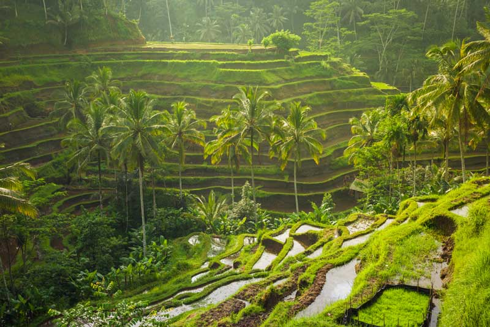

B

A
L

I
Ini adalah pulau paling terkenal di Indonesia. Ini adalah tempat yang mengagumkan yang menyimpan kombinasi spektakuler dari keindahan alam dan pemandangan budaya. Keindahannya menyatu dengan harmoni dengan orang-orang yang hangat
dan bersahabat. Di sini kebudayaan tetap diteruskan turun-temurun dari generasi ke genari. Pulau ini dinamakan Bali.
Bali terkenal dengan banyak nama; pulau dewa-dewa, pulau seribu candi, dan pulau surga. Orang-orang memanggil bali dengan sebutan ‘pulau surga’ bukan tanpa alasan. Bali memiliki keindahan alam yang sangat luarbiasa seprti gunung berapi yang terlihat dekat dan besar; sawah yang terhampar luas yang memberikan rasa kedamaian dan ketenangan; serta butiran pasir pantai-pantai di Bali dan keindahan lautnya yang sangat menggoda. Bali juga memiliki tarian-tarian yang dramatis, upacara adat yang beragam, serta kesenian dan kerajinan tangan yang indah dan bagus.
Pulau eksotik ini mempunyai banyak hal menarik yang ditawarkan; mulai dari kehidupan spiritual dan kuliner tradisional sampai ke pengalaman tak terlupakan seperti surfing, diving, dan tracking hutan yang menantang keberanianmu. Itu lah mengapa Bali dinominasikan sebagai pulau terbaik di dunia pada tahun 2009 oleh majalah Travel and Leisure and sebagai tempat wisata terbaik ke dua pada tahun 2010 oleh Lonely Planet.
Bali terkenal dengan banyak nama; pulau dewa-dewa, pulau seribu candi, dan pulau surga. Orang-orang memanggil bali dengan sebutan ‘pulau surga’ bukan tanpa alasan. Bali memiliki keindahan alam yang sangat luarbiasa seprti gunung berapi yang terlihat dekat dan besar; sawah yang terhampar luas yang memberikan rasa kedamaian dan ketenangan; serta butiran pasir pantai-pantai di Bali dan keindahan lautnya yang sangat menggoda. Bali juga memiliki tarian-tarian yang dramatis, upacara adat yang beragam, serta kesenian dan kerajinan tangan yang indah dan bagus.
Pulau eksotik ini mempunyai banyak hal menarik yang ditawarkan; mulai dari kehidupan spiritual dan kuliner tradisional sampai ke pengalaman tak terlupakan seperti surfing, diving, dan tracking hutan yang menantang keberanianmu. Itu lah mengapa Bali dinominasikan sebagai pulau terbaik di dunia pada tahun 2009 oleh majalah Travel and Leisure and sebagai tempat wisata terbaik ke dua pada tahun 2010 oleh Lonely Planet.